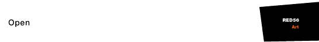
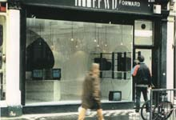
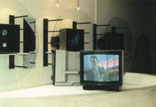
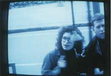
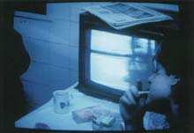
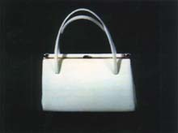
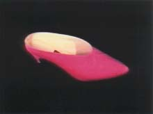

|  | ||
261 Kings Road 1992 Open was a collaborative performance and video installation with Izzie Klingels, together with performers/artists James Dawson-Hollis, Rachel Lowther, Hiroyuki Nakata, and Asako Zakuroyama. It took place in vacated shopfront (formerly an accessories shop). |
||
|  |  | |
The shop front was glass. The door remained locked throughout the day. At the front of the shop, by the door, was a monitor showing unchanging text: 'Open // 10 - 6 // Monday - Saturday'. On the walls of the shop were six monitors behind plate glass, showing unchanging shots of a single item of merchandise (Each item was videoed from an original acquired in the Kings Road). Two monitors were on the table in the centre of the shop each angled towards a side wall but still visible from the street. What these showed depended on whether it was 'work' or 'break' time. |
||
|  |  | |
Work: The central monitors both showed the window shoppers outside peering into the shop, by live feed. Window shoppers could watch their own video representations watching the video representations of the goods. At hourly intervals the six performers made a short "maintenance" performance. Break: The performers went downstairs and the central monitors were changed to a live feed of the downstairs staff room where the staff relaxed, eating their lunch or drinking tea or coffee, and watching 'television', showing the live feed of the window shoppers. |
||
|  |  | |